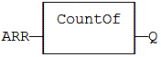
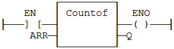

Function
Returns the number of items in an array.
|
Name |
Type |
Description |
|
ARR |
ANY |
Declared array. |
|
Name |
Type |
Description |
|
Q |
DINT |
Total number of items in the array. |
The input must be an array and can have any data type. This function is particularly useful to avoid directly writing the actual size of an array in a program, and thus keep the program independent from the declaration.
FOR i := 1 TO CountOf
(MyArray) DO
MyArray[i-1] := 0;
END_FOR;
In LD language, the operation is executed only if the input rung (EN) is TRUE. The output rung (ENO) keeps the same value as the input rung.
|
Array |
Return |
|
Arr1 [ 0..9 ] |
10 |
|
Arr2 [ 0..4 , 0..9 ] |
50 |
Q := CountOf (ARR);

The function is executed only if EN
is
TRUE.
ENO keeps
the same value as EN.
